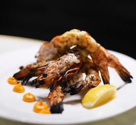
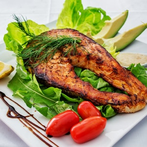
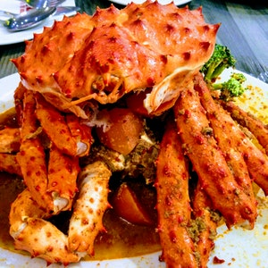
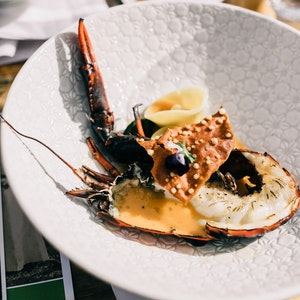
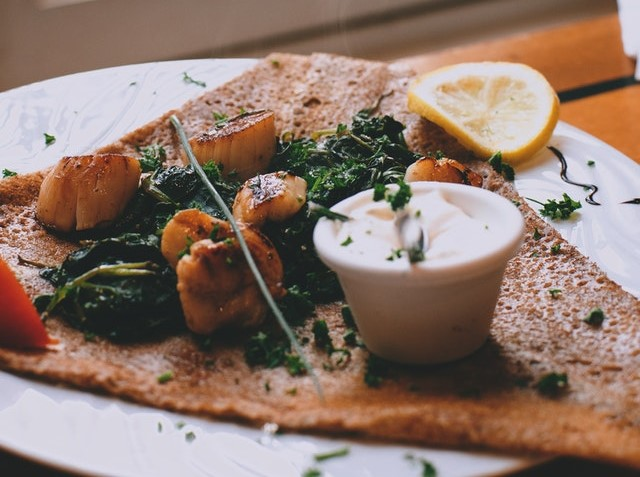

Shrimp is one of the most commonly consumed types of shellfish.
It is quite nutritious and provides high amounts of certain nutrients, such as iodine, that aren’t abundant in
many other foods.
On the other hand, some people claim that shrimp is unhealthy due to its high cholesterol content.
Fish

Fish is a low-fat high quality protein. Fish is filled with omega-3 fatty acids and vitamins
such as D and B2.
Fish is rich in calcium and phosphorus and a great source of minerals, such as iron, zinc, iodine,
magnesium, and potassium.
The American Heart Association recommends eating fish at least two times per week as part of a
healthy diet.
Crab

Crab is one of the best possible dietary sources of protein available.
It contains almost as much protein per 100
grammes as meats without anywhere near the same levels of saturated fat, which is linked to an increased
risk of heart disease.
All shellfish are a good source of Selenium but crab meat is particularly rich in it.
Lobster

Lobster is a type of shellfish that is typically prepared by boiling or steaming.
Lobsters are a great source of selenium and also contain omega-3 fatty acids.
They can help protect against thyroid disease, depression, and anemia.
Lobster can serve as the main source of protein in a meal.
Scallop

Scallops are a type of shellfish eaten all over the world.
Increasing your protein intake through foods like scallops may aid weight loss.
Scallops are rich in vitamin B12, zinc and omega-3 fatty acids. Getting adequate amounts of these
nutrients is essential for brain development and associated with a reduced risk of mental decline and
mood issues.